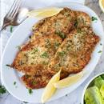

Chicken Cutlet Recipe

Description
Cutlet were a typical starter in French cuisine, as a variation
of Croquettes with a shape of small rib (côtelette in French).
The bone was simulated by a piece of fried bread or pasta.
The recipe became popular in all Europe due to the influence
of French cuisine.
Ingredients
- 2 Eggs
- 2+ Cups of Bread Crumbs
- Chicken Cutlets
- Oil
- Paper Towels
Steps (Homemade/Personal Recipe)
- Put oil in a pot and wait till it bubbles
- Take out a big bowl and pour the Bread Crumbs
- Take out a smaller bowl, crack your eggs into it and whisk them
- Wash the Chicken in water, dredge them in the egg wash and then the Bread Crumbs
- Fry them in the oil until you get the color you want
- Let the finished Cutlets rest of paper towels for 2-5 minutes
Links